Short Bio
I am a Senior Designer at IDEO.org where we work to bring the power of design to global challenges related to poverty. We design solutions in sectors like agriculture, reproductive health, and financial inclusion. My area of expertise is in building physical and digital products and my work sits at the intersection of industrial design, interaction design, and service design. Most of my work with IDEO.org is based in East Africa and South Asia.
My career has oscillated between design consultancies and startups. After graduating in industrial design I went to work for some of the ID studios in Chicago and later found my way to the Bay area startup scene. I've been a part of getting two startups off the ground (Mosaic and Uber Shelter), one is currently thriving and the other one failed–the lessons learned from both were equally valuable.
I'm now based in NYC and in addition to my work at IDEO.org, am currently building a company and software product that will help companies be more data driven in their approach to diversity and inclusion.
Growing up in a mixed household
I grew up in Indianapolis in a household with many intersections. My father is black and my mother is Latina from Uruguay. Beyond just race and nationality, my parents embody different backgrounds, experiences, and identities around religion, socioeconomic class, and education. Only as an adult have I been able to fully appreciate the diversity I was surrounded by as a child. My mother and I speak in Spanish (my father does not), my father and I speak in a black vernacular that my mom doesn't always understand, and when we are together we speak a shared language with borrowed words, idioms, and references from all these cultures. My early experiences of code switching were positive ones centered around how I connect with my family.
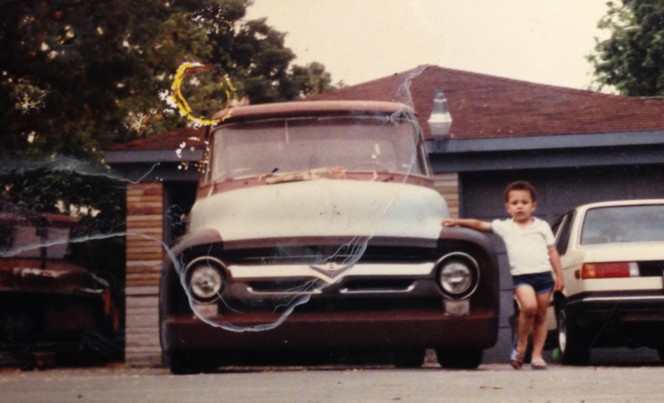
Me in the late 80's. My pops was building a 1956 Ford F-100 pickup truck
How did you first get interested in design?
I learned how to be a designer from my parents even though neither would call themselves that.
My father was a machinist, he built airplane engine parts by day and worked on hotrods by night. I spent a lot of my childhood in the garage handing him tools and jumping in where I could be helpful. He taught me how to problem solve by making and tinkering. If Picasso's motto was, "To know what you're going to draw, you have to begin drawing", then my father's was–to know what you are going to build you have to start building it. Without formal training in automotive, my pops rebuilds old cars from the ground up–from engine and wiring to bodywork and paint. He and his hot-rod buddies have been prototyping and iterating since before those words were co-opted by people in black turtlenecks and designer glasses.
I had an unfair advantage by the time I got to design school. I had spent my childhood surrounded by makers, mechanics, and machinists who I feel are the most creative people on the planet. They just didn't have the privilege of going to a school to turn their talents into a marketable skill like design.
My mother is a business woman and entrepreneur. From her I learned how to think critically, logically, and analytically–mindsets that are foundational to the type of designer I am. When I was young, I watched her leave a career in banking to become the 6th employee and a startup that she helped grow into a mid-sized company that now employs over 90 people with offices in 4 continents. It's from her I get my grit and confidence.
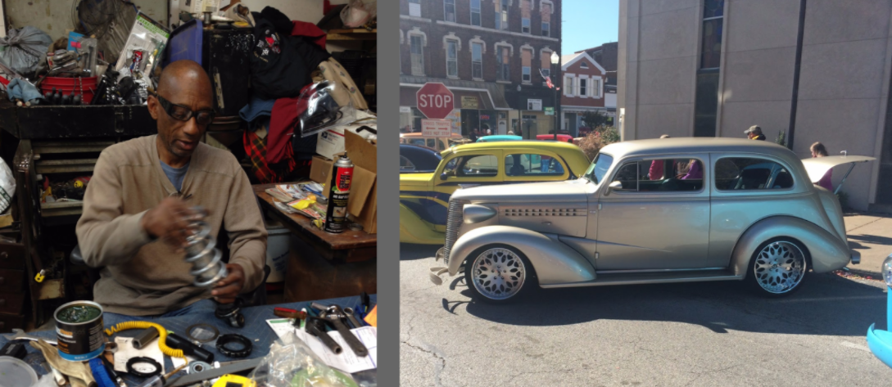
My pops working on a 1938 Chevy sedan that he finished last summer.
Tell me about the work you've done?
Industrial Design:
I started my career in industrial design working on consumer products–mostly home goods. I worked on a range of products like coffee makers, toasters, humidifiers, and once had the pleasure of designing a pooper-scooper. My favorite projects during my time in consumer products were the power tools shown below. My least favorite project was designing finials. For those who are not familiar (and for your own sake, I hope you are not), finials are the distinctive ornaments at the end of curtain rods. I didn't understand the words repetitive and meaninglessness until I spent a month drawing hundreds of these things.
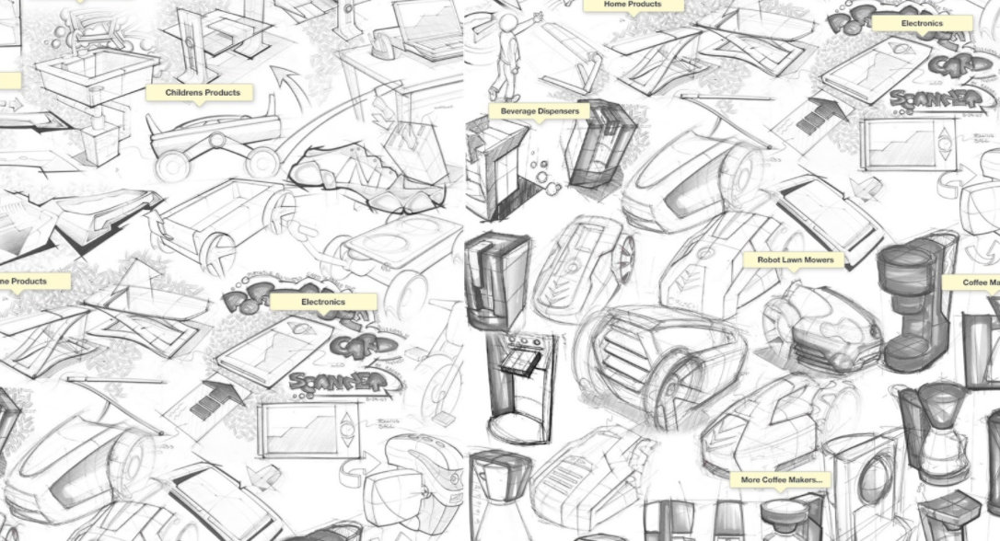 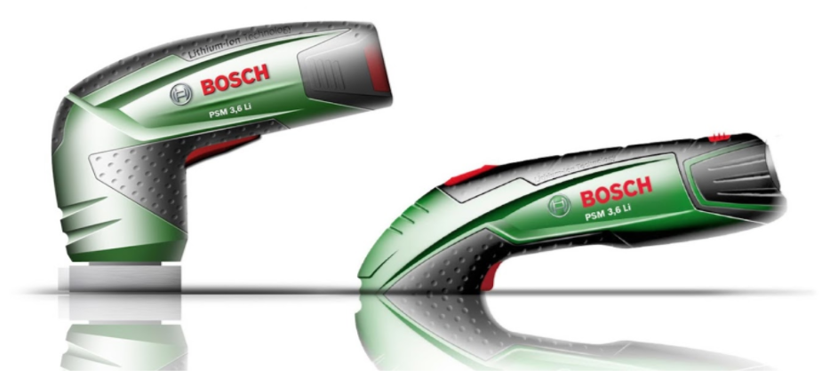
More recently, in ID, I designed an agricultural tool for small scale chicken farmers in Tanzania. One of the most expensive parts of chicken farming in this context is the high cost protein feed farmers need to grow their flocks. The cost is often prohibitive to allow them to increase their flock. We built a product that reduces feed costs substantially by allowing farmers to grow their own protein feed for chickens through a process very similar to vermi-composting (growing worms in food waste).
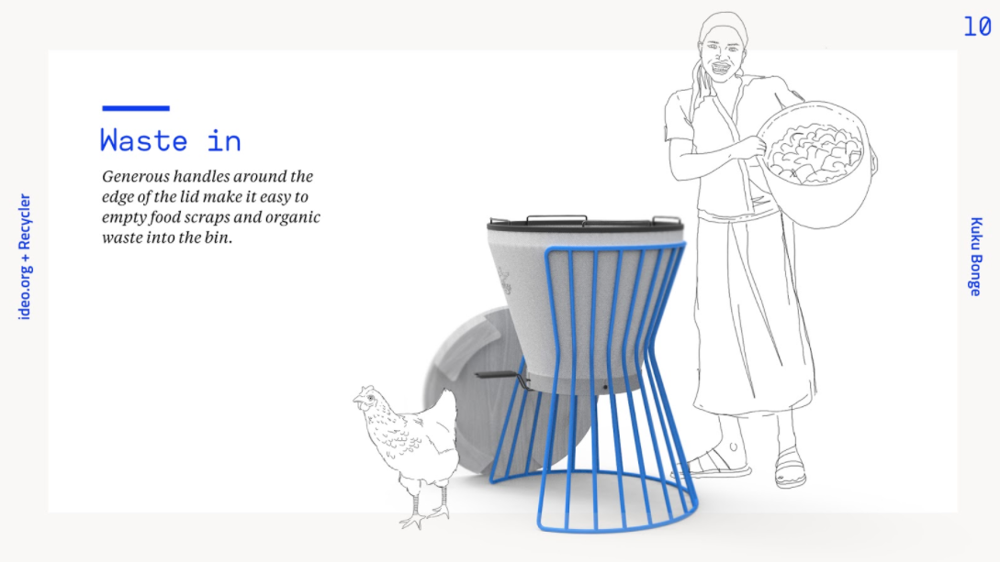
Interaction Design:
I'm a self taught interaction designer. In college I would build websites on the side for a little extra cash and later in my career when I moved to the bay area I dove into tech. I started pretending like I knew what I was doing as a UI/UX designer and a startup was willing to give me a shot.
A few years later (and after a bit more practice) when I landed at IDEO.org I worked on the app shown below for a financial education company called MoneyThink. We designed a challenge-based app that that helped bridge the theoretical financial curriculum students were learning in the classroom with their financial lives in the real world. The app invites youth to complete interactive challenges in their everyday lives along with real-time feedback from their peers and mentors. The app was piloted in about a dozen high schools last year and was dubbed "The Instagram of Money" by students.
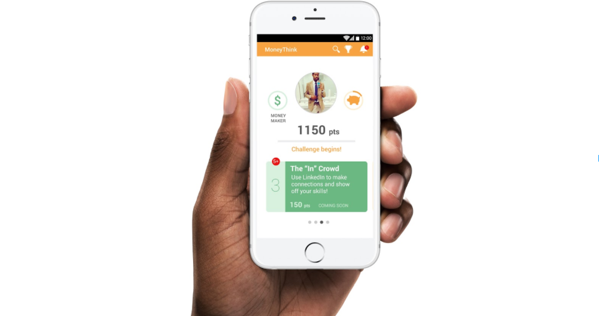
Service Design:
Last year I worked on one of the most emotionally challenging projects I've ever been on. Our client was a non-profit based in Kibera, an informal settlement in Nairobi, Kenya and one of the largest slum areas in East Africa. This organization provides victims of sexual violence with free, world-class, medical attention, counseling, and legal support. Our team was tasked with increasing access to services for survivors in certain neighborhoods with low self-reporting rates. Among many other deliverables, we designed a number of service blueprints to help the organization's services reach underserved neighborhoods in Kibera. Since our work with them, SHOFCO has seen a 300% annual increase in the number of reported cases of sexual and gender based violence.
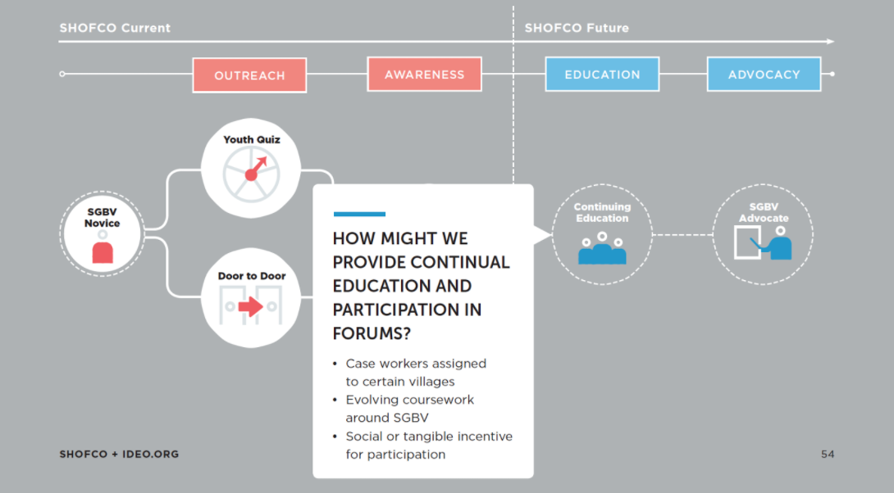
What are you working on right now, either for work or for yourself?
The thing I wake up most excited about is figuring out how design and technology can contribute to diversity and inclusion and the larger movements around racial, gender, and (insert other identity) justice.
ne big opportunity we are seeing in the space of diversity and inclusion (D&I) is in helping companies be more data driven in their diversity efforts. We noticed that companies are often left with theoretical frameworks and approaches to D&I. The analogy that comes to mind is the thought of any internet company making business decisions without google analytics (or a comparable analytics platform) to understand their users, web traffic, reach etc. Not using tools that provide visibility into the business would be inconceivable today for most businesses but diversity and inclusion is not approached with the same level of rigor. Our mission is to make this space of D&I data driven by giving companies the ability to have clear visibility into their hiring trends, pay gaps, promotions, and culture so that companies can have insights into where, specifically, bias creeps into their organization, and take the appropriate approaches to building inclusive cultures. What gets measured gets managed and we are currently building the "google analytics" of diversity and inclusion.
The screenshot below is a early wireframe. Spotify is not an actual customer (yet), just an example for the white label product.
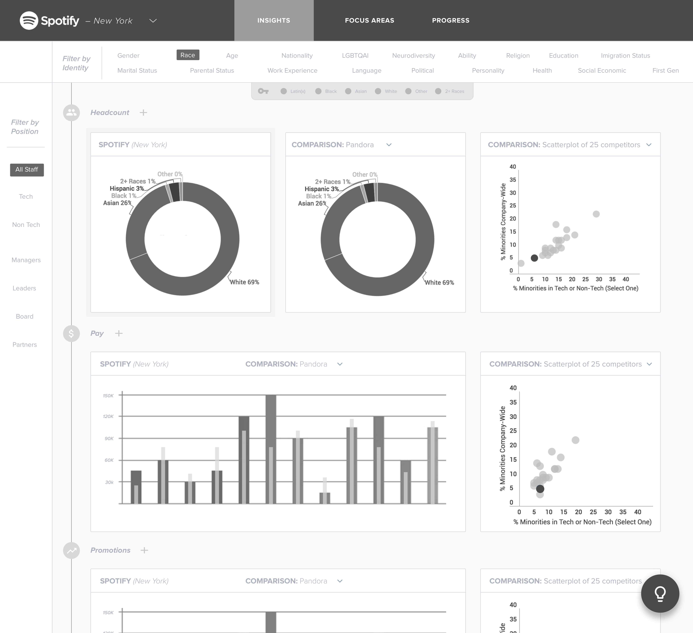
What are your proudest accomplishments of your career?
Growing my skills in design research and the moments I'm able to build a genuine connection and understanding with people during research. A designer I look up to always says, "the problem is not just solving the problem, the problem is defining the problem." Learning how to conduct design research in order to fundamentally understand the "why" behind a problem or opportunity and not just execute on the "what", has been the most foundational skill-set I've developed as a designer.
What I love most about design research is designing tools that facilitate learning. The designers I look up to most have become masters of learning how to learn. They may not be content or domain experts but they have the vulnerability, confidence, and skills to jump into any situation and accelerate the pace of learning. That often means building tools that can push a conversation with users beyond Q&A.
This is a project I worked on in India around improving the value chain for Dairy farmers.The image below is a research method we built to have farmers, middlemen, and other value chain actors help us understand how the dairy value chain functions in Tamil Nadu, India for an agricultural service we were designing. The research exercise had cards with different places, people, services, and goods. We put users into teams and had them map the system to help us understand the industry from their perspective. This helped unearth insights that would have never come to light in a normal Q&A style interview.
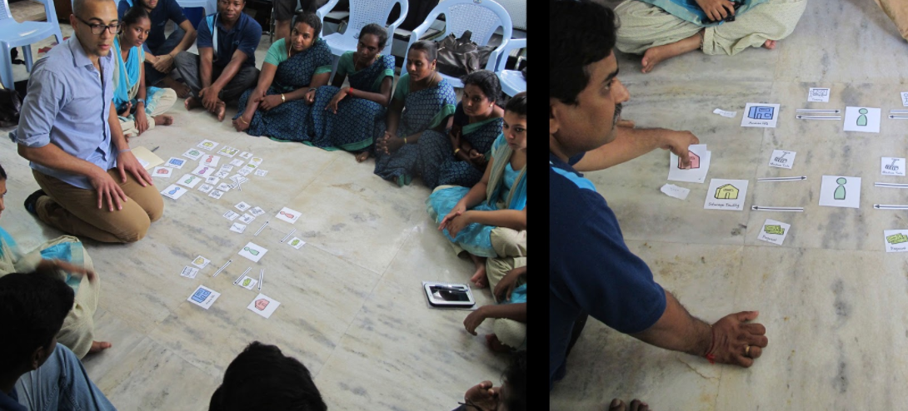
What are you doing that's special that sets you apart from your peers?
I am jack of many trades and master of none. I am not the best at any one individual craft. Many of my peers can run circles around me in any siloed discipline like industrial design, interaction design, or service design. However, when it comes to building intersectional products, for example: a physical product with a digital component that is linked to a service, I am uniquely positioned to help that idea go to the moon. I never thought about it this way but I guess I'm an intersectional designer.
there is still not a week that goes by that I do not struggle with working in a racially homogenous workforce
What have your experiences been as a person of color in the design industry?
My experiences have been amazing and frustrating. At times I've felt very connected and other times incredibly isolated.
I am where I am because of a number of people who reached out to pull me up. I have had many incredible opportunities handed to me from people in design who believed in me before I even believed in myself.
As amazing as this ride has been, there is still not a week that goes by that I do not struggle with working in a racially homogenous workforce. This was especially difficult for me when I was younger. It wasn't until I got into my late 20's that I started building the vocabulary and frameworks to understand the race and class dynamics that were happening in front of me daily. Before this time, when I would experience anything from an unintentional micro-aggression to an overtly racist comment or action, I would emotionally self implode. I would feel confused, frustrated, and unable to decipher whether I just experienced discrimination or if I was imagining it. These micro-aggressions drive people crazy and I mean that literally. I have a number of unbelievably talented friends who entered racially homogenous workforces after college and could not cope with the invisible pressures of being a person of color in white corporate America.
I am still figuring out how to navigate this. I've become much more vocal on issues of race at work. If feels good to speak up and many people are supportive; it is also frustrating when you are constantly walking on eggshells to avoid being seen as the diversity police or when you go out of your way to educate people and they just don't want to understand.
What are your biggest motivators?
Seeing other people's creative process and bringing inspiration back into the work I'm doing. I reflect on this quote from Ira glass a few times a year.
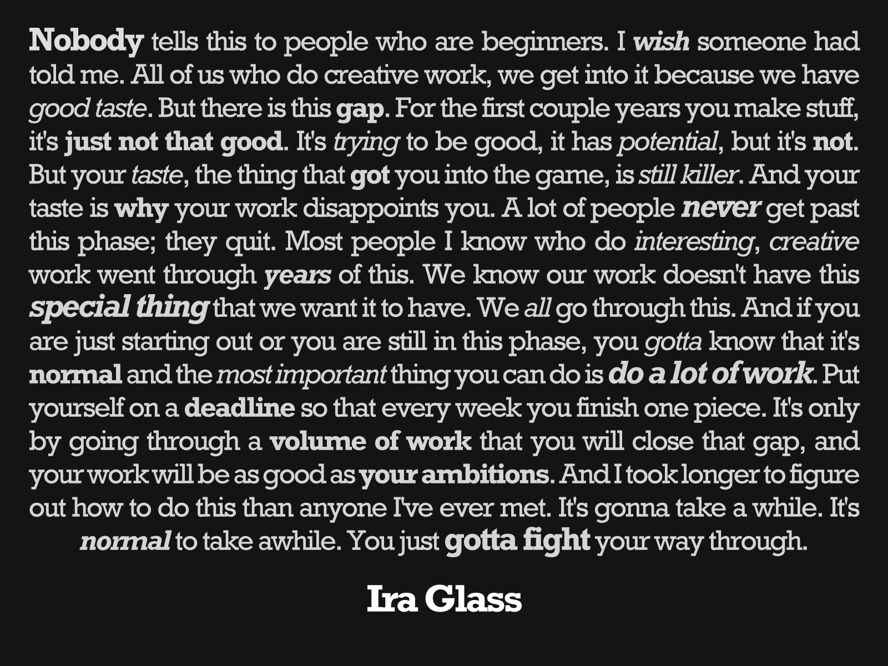
How do your friends and family feel about the work you've done?
I am fortunate to have a really amazing community around me. Most of my friends and family don't fully understand what I do but have my back like Mama Klump:
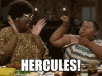
I have to especially give a shout out to my mom and dad who are my biggest cheerleaders. Without them nothing I've accomplished would have been possible.
If our industry intends on staying relevant we have to turn and face the systems in place that perpetuate cycles of privilege and exclusion.
What would you like to see changed about the design field?
Diversity. The world is changing and more and more designers are asked to design for people who are not like them. If our industry intends on staying relevant we have to turn and face the systems in place that perpetuate cycles of privilege and exclusion. We are hurting ourselves by homogenizing ourselves.
We use the word empathy on a daily basis and as Morgane Santos mentions in The Unbearable Homogeneity of Design, "we pretend that one kind of person can have empathy for every other kind of person." We have to stop pretending that interviewing a user for a few hours builds the kind of empathy that can lead to the understanding of behaviors, aspirations, and mindsets necessary to build world changing products.
How can design be more accommodating to underrepresented populations of people?
Companies need to prioritize diversity and inclusion as a core value and a long term commitment. There isn't' a quick fix button for this. My friend De Nichols says that companies do the diversity training and think that that's the work–the real work actually starts afterwards and people confuse the two. My other good friend Cambrie Nelson often talks about the inherent tension of diversity and inclusion. She notes that organizations are looking for stasis–and inclusion is in itself destabilizing because inclusion means I can respond with my voice which may be different from the stasis. Inclusion then, requires a shift from a culture of "I get to be here" to "I am here, am able to express my voice, and am heard." I think this hits on another big misconception that corporate America still doesn't understand–diversity and inclusion are two very different things and achieving one does not imply you achieve the other.
Where do you see yourself in 5 or 10 years? Do you think you'll stay in design?
Most importantly I see myself working with people I love and I see myself waking up everyday feeling excited to go to work. I want to do this for the rest of my life.
I see myself building products that dismantle unequal systems of power and privilege and build access and equity for broader groups of people.
As Van Jones says, "It's not just about making rich groups more diverse, but also about making diverse groups richer."
I see myself using design and technology to positively influence both those fronts.
Be solution focused and medium agnostic. Like the old say goes, when the only tool you have is a hammer every problem looks like a nail. We have to be on constant guard from this mindset. Push and stretch yourself outside of your craft or discipline. Let the problem you are trying to solve be the northstar, don't focus on whether you are a graphic designer or an industrial designer.
What advice would you give to folks from similar backgrounds who are in design or hoping to get into it?
-
Whenever you are doing something new, give yourself permission to be a novice. My career took off the day I stopped trying to be the cleverest person in the room.
-
Embrace ambiguity–design is uncomfortable. There is not a single project I work on where I don't feel like I am the worst designer ever for at least a few days. Lean into the discomfort, shame, and fear–your creativity and genius is just on the other side.
-
Design process is important but don't let it become dogma. Design process is like Jazz–you may have a hook or bridge in place for scaffolding but everything in between is improv.
-
The problem is not just solving the problem–the main problem is defining the problem. A big part of our job is making sure we are asking the right questions.
-
Building ownership of our ideas with our client and teammates is half the battle. Storytelling is a big piece of our job.
-
Stay inspired. A big part of our jobs is simply bringing outside inspiration to old ideas.
-
Be solution focused and medium agnostic. Like the old say goes, when the only tool you have is a hammer every problem looks like a nail. We have to be on constant guard from this mindset. Push and stretch yourself outside of your craft or discipline. Let the problem you are trying to solve be the northstar, don't focus on whether you are a graphic designer or an industrial designer.
-
Take leaps and lean into your intuition. You can't always logic your way into breakthrough ideas.
-
Your dreams are your responsibility, give them the attention they deserve. Carve out time everyday to dream about what you want–it's the first step. Be bold.